Windows OpenSSH 安装与配置
1 目的
实现免密远程登录到 Windows 服务，并可以进行文件传输
扩展知识：SSH
2 安装
2.1 根据系统情况，下载程序包
下载地址：[https://github.com/PowerShell/Win32-OpenSSH/releases](https://github.com/PowerShell/Win32-OpenSSH/releases)
比如我的服务器系统是64位的，下载的[OpenSSH-Win64.zip](https://github.com/PowerShell/Win32-OpenSSH/releases/download/v8.1.0.0p1-Beta/OpenSSH-Win64.zip)2.2 解压在第一步下载的压缩包内容到 C:\Program Files\OpenSSH
2.3 将以上目录配置环境变量中
验证：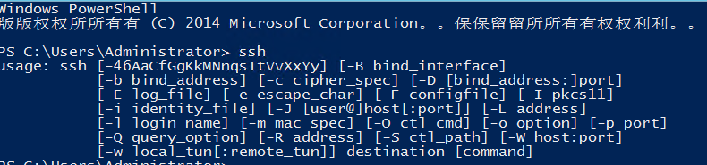
2.4 使用管理员命令行工具运行以下命令，安装 SSH 服务
命令行进入到OpenSSH文件夹目录（这里为：C:\Program Files\OpenSSH），执行以下命令
1 | powershell.exe -ExecutionPolicy Bypass -File install-sshd.ps1 |
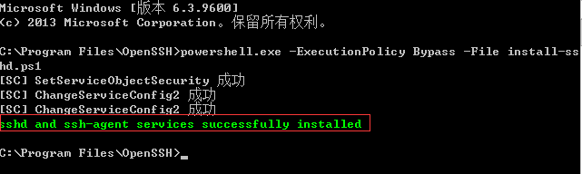
2.5 在防火墙开启端口 22 端口号(命令行窗口)
1 | New-NetFirewallRule -Name sshd -DisplayName 'OpenSSH Server (sshd)' -Enabled True -Direction Inbound -Protocol TCP -Action Allow -LocalPort 22 |
注意：Windows10 以及 Windows 2008 R2 以下版本请使用以下命令(命令行窗口)
1 | netsh advfirewall firewall add rule name=sshd dir=in action=allow protocol=TCP localport=22 |
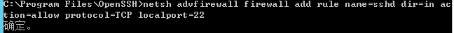
2.6 启动 SSH 服务(命令行窗口)
1 | net start sshd |
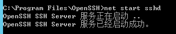
2.7 设置 SSH 服务开机启动（以下操作，在不同系统版本内设置稍有不同，大致操作一致）
点击左下角服务器管理器 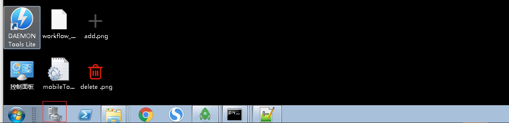
找到服务选项
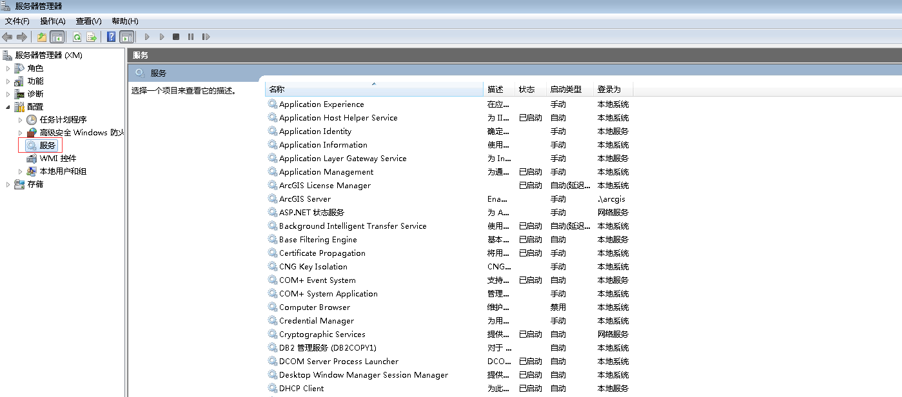
以下为 Windows server 2012 r2 截图，跟上图老版本的系统稍微有些差别
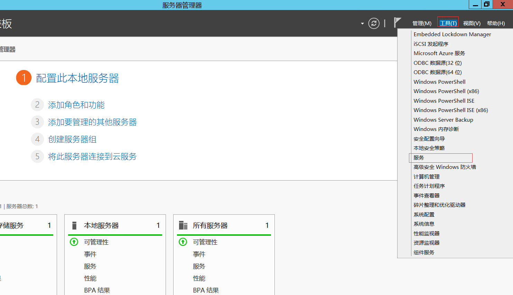
找到 OpenSSH SSH Server 服务（进入列表后输入 O）可快速找到该服务，选中服务右键属性，将启动类型改为自动
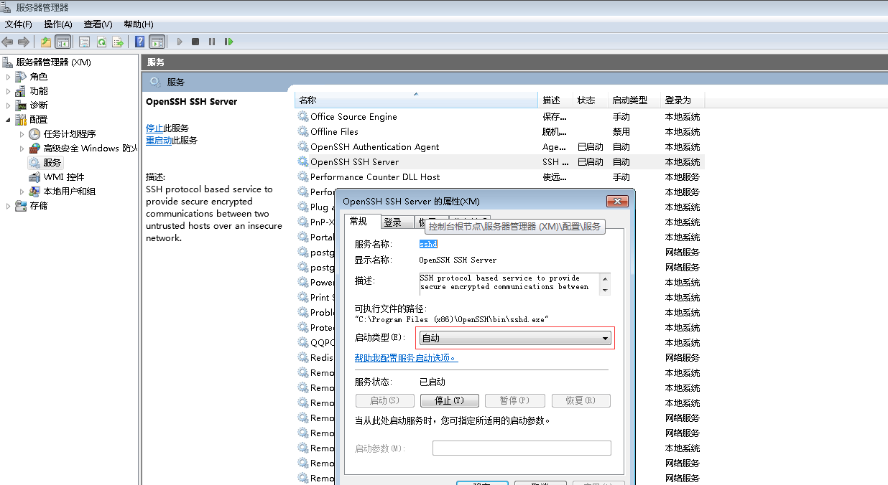
2.8 测试是否可以连接
通过带有 SSH 客户端的机器测试
这里使用 Win10 自带 SSH 功能远程连接(命令行窗口)
命令格式：ssh 用户名@ip
1 | ssh weihu@192.168.0.183 |
使用以上命令时，大家可能看到还需要输入用户名密码才能连接上服务器，这个还没达到咱们要实现的目的
3 配置免密登录
3.1 修改 SSH 配置
修改 C:\ProgramData\ssh\sshd_config 文件
- 将文件中以下配置解开注释
1 | PubkeyAuthentication yes |
- 将文件中以下配置注释掉
1 | #Match Group administrators#AuthorizedKeysFile __PROGRAMDATA__/ssh/administrators_authorized_keys |
- 修改默认配置，配置ssh 默认可访问的根目录
1 | ChrootDirectory D:\ |
- 重启 sshd 服务
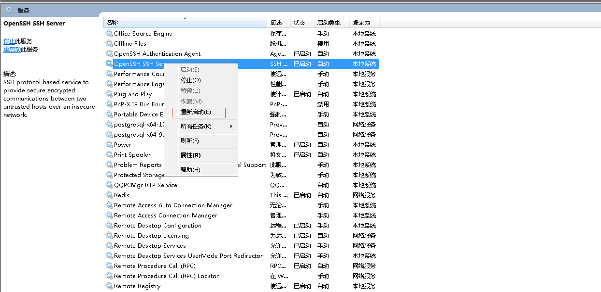
- 配置客户端公钥
将客户端公钥文件内容拷贝进入服务器 authorized_keys（文件不存在就创建），文件中 C:\Users\用户名.ssh\authorized_keys
说明：由于 Windows 默认不允许创建.开头的文件夹，这里使用命令创建（mkdir .ssh）
客户端公钥如何获取，请查看下面章节
- 免密登录验证
1 | ssh weihu@192.168.0.183 |
此时再进行连接时，就不需要输入密码直接连接成功了
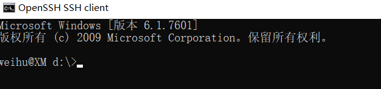
4 其他
4.1 客户端 SSH 密钥获取
在本地（客户端）生成公钥（需要安装openssh，win10及Windows Server 2019以上版本自带ssh功能，无需再安装，如果需要安装，可按照章节“安装”中1.2.3步骤配置客户端）
执行以下命令前，先检查C:\Users\你的用户.ssh目录下是否已经存在.pub结尾的文件，如果存在，无需执行以下命令，该文件即为公钥文件。不存在时，执行以下命令生成密钥
1 | ssh-keygen -t rsa |
- 使用文本编辑器打开上一步骤中.pub结尾的文件，拷贝里边的内容，即为公钥内容
注：这里的说的客户端是相对的，如果服务器 A 通过 SSH 访问服务器 B，那A也是客户端。
4.2 免密拷贝文件
- 从本地复制文件到远程服务器
命令格式：scp [-r] 本地路径 远程服务器用户名@远程服务器ip:远程服务器相对配置根路径的目录
1 | // 拷贝单个文件scp 工具\hello.txt weihu@192.168.0.183:/Product// 拷贝目录（多文件）scp -r dist/* weihu@192.168.0.183:/Product/test |
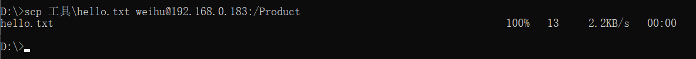
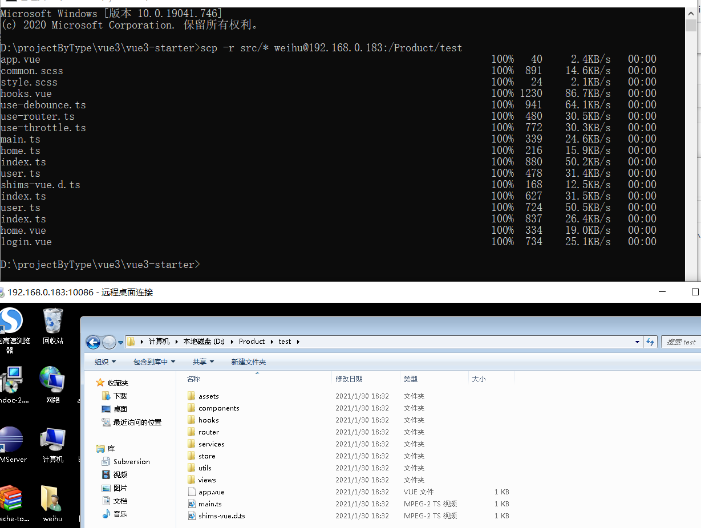
- 从服务器往本地复制文件
将以上命令本地和服务器参数对调下即可
了解更多：https://www.runoob.com/linux/linux-comm-scp.html
4.3 执行远程主机上命令行
命令格式：ssh 用户@主机ip “命令”
以下示例实现了进入/Product/test目录，并查看目录信息及主机安装node版本信息
1 | ssh weihu@192.168.0.183 "cd /Product/test &&dir&&node -v" |